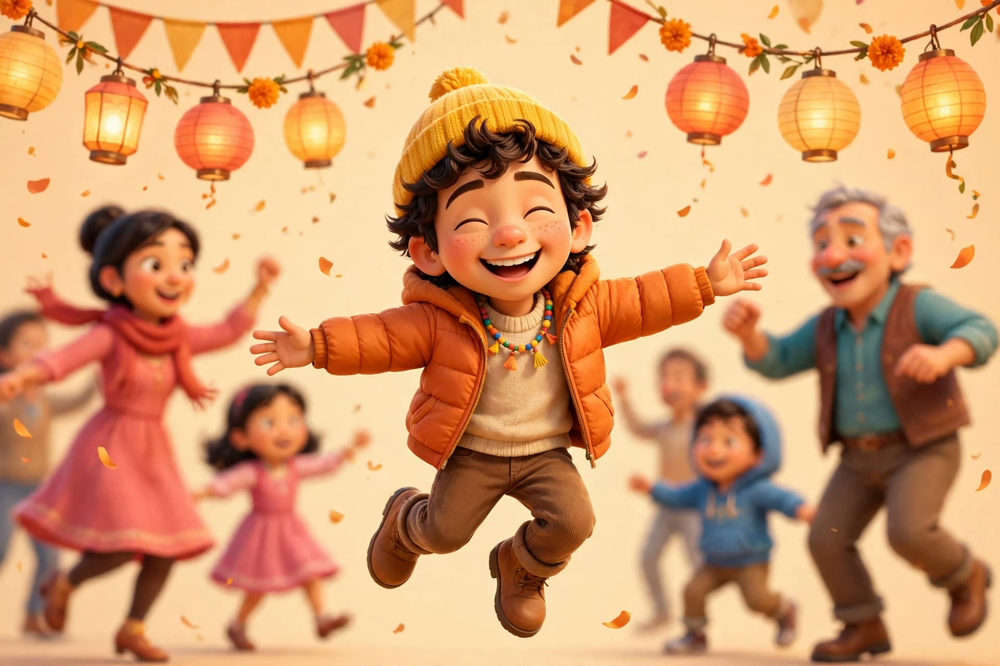

Unit 4 · ASEAN and Vietnam — Lesson 2: Language · Grade 11 · Extra Class (B1–B2)
Form: verb + to + verb — it answers the question "Why?"
• We wear traditional costumes to celebrate the festival.
• Students come to the exchange day to make new friends.
Form: It is + adjective + to + verb · be + adjective + to + verb
• It is important to respect other cultures.
• I am happy to meet you. · It is interesting to learn about ASEAN.
🧺 3. After NOUNS: a chance to learn · an opportunity to travel · time to practise · the first student to perform.
💡 Remember: to + verb can show purpose (để làm gì), follow adjectives (happy / important / interesting / difficult) and follow nouns (chance / opportunity / time / the first…).
Last Saturday, Linh and Nam's school held a Cultural Exchange Day. In the morning, thirty exchange students from Thailand, Japan and Indonesia arrived, and the two friends welcomed them warmly. In the school hall, everyone learned folk dances from each country. Linh taught her new friend Aya a Vietnamese lotus dance with fans. "Dance is a great way to connect people," Aya said.
At the music corner, Nam tried a bamboo xylophone from the Central Highlands. Their teacher said that music is an important part of our heritage. At lunchtime, the food stalls were full of colours and smells: Linh offered Aya phở, and Aya shared tom yum from Thailand. In the afternoon, the students exchanged souvenirs — Nam gave Aya a conical hat he painted himself, and Aya gave Linh a beautiful silk scarf.
Then everyone gathered in the school yard for the stage performance. Linh was a little nervous to sing in front of so many people, but the performance was great. Later, the students painted a big picture together to show friendship and harmony. When the sun went down, they lit colourful lanterns and took a photo. For Linh and Nam, culture helps people to understand and respect each other — and the day ended with new friendships.
PART 1 — Complete the form: CULTURAL EXCHANGE DAY — Event Information
PART 2 — True or False?

Useful language: We hold the event to celebrate… · Students wear traditional costumes to welcome visitors. · It is important to respect other cultures. · I am happy to make new friends. · We have a chance to taste dishes from many countries. · It is interesting to learn folk dances.
A: What happens on Cultural Exchange Day?
B: Students from ASEAN countries come to our school to share their cultures.
A: What do you do on that day?
B: We wear traditional costumes, perform folk dances and taste many dishes.
A: How do you feel?
B: I am happy to meet new friends. It is a great chance to learn about other cultures.
Sentence starters: Last Saturday, our school held a Cultural Exchange Day to… · Students came early to… · We performed folk dances to… · It was interesting to… · I was happy to…
Last Saturday, our school held a Cultural Exchange Day to welcome students from Thailand, Japan and Indonesia. We came early to decorate the school hall. In the morning, we learned folk dances and tried a bamboo xylophone. At lunchtime, we tasted many dishes to learn about other cuisines. In the afternoon, we exchanged souvenirs and took a photo with lanterns. It was interesting to make new friends, and I was happy to share my culture.
Take a photo/screenshot of your report card and send it to your teacher!
| Part | Score |
|---|---|
| Warmer game (Lesson 1) | – |
| Vocabulary — Matching | – |
| Vocabulary — Gap-fill | – |
| Grammar check | – |
| Video check — Order the events | – |
| Video check — True / False | – |
| Reading | – |
| Listening — Form completion | – |
| Listening — True / False | – |
| Homework A — Vocabulary | – |
| Homework B — To-infinitives | – |
| Homework C — The story | – |